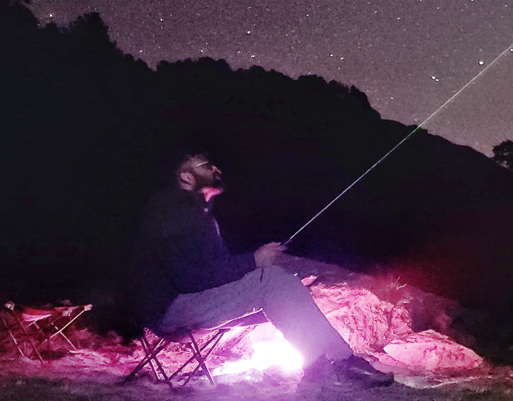

Gokul R.
Kamath
29.8656° N, 77.8965° E — CoEDMM, IIT Roorkee
Geospatial researcher working at the intersection of remote sensing, disaster risk & geospatial AI.
I build reproducible workflows that turn satellite, climate, terrain, and spatial data into evidence for understanding environmental hazards and their impacts on communities.

What I study, and how I study it
Disaster Risk
Landslide and flood risk assessment using hazard, exposure, vulnerability, and resource-based indicators.
Remote Sensing
Satellite image processing, NDVI/NDWI, land-cover change, phenology, precipitation, and Earth-observation time series.
Geospatial AI
Machine learning, clustering, spatial modelling, Bayesian networks, and interpretable risk analysis.
Reproducible Computing
Python, GeoPandas, Rasterio, Xarray, Google Earth Engine, QGIS, ArcGIS Pro, and Streamlit applications.
Landslide risk
My current research explores how landslide risk can be assessed by integrating hazard, exposure, and resource-based vulnerability — rather than treating susceptibility alone as a proxy for risk. The work uses geospatial datasets, remote sensing, statistical modelling, machine learning, and probabilistic approaches to understand how environmental hazards intersect with communities.
- Hazard — landslide susceptibility and spatial hazard characterization
- Exposure — settlements, infrastructure, population, and built environment
- Vulnerability — resource-based indicators and community capacity
- Risk modelling — probabilistic and Bayesian-network approaches
- Earth observation — satellite-derived environmental indicators and change detection
Case study — Uttarkashi, Uttarakhand
The Uttarkashi work brings together hazard information with settlement and resource-based vulnerability indicators to produce a more context-aware view of landslide risk.
Dissertations & module projects
Independent research completed during the PGD in Geoinformatics and GIS-trainee coursework — the groundwork for the current disaster-risk research direction.
Flood Susceptibility Mapping using GIS-AHP: Periyar Basin
Combined the Analytical Hierarchy Process with GIS and remote sensing across 4 flood-causing criteria (hydrological, morphometric, permeability, LULC) and 8 sub-criteria layers to map flood risk zones for preparedness planning.
Phenology-Based Classification of Vegetation Using NDVI Datasets
Extracted vegetation phenology metrics from an 22-year MODIS 16-day NDVI time series (2000–2022) using signal processing, then applied unsupervised clustering to classify statewide land cover,an automated workflow for classification.
Selected projects
A curated selection spanning remote sensing, geospatial analysis, disaster risk, climate data, machine learning, and web GIS — from Earth-observation data to usable geospatial applications.
Additional applications
Beyond the featured work above, this catalogue includes further research workflows and geospatial applications.
Publications
Research presented at conferences and forums, and work currently in preparation.
Background
Work experience
-
Technical Associate — Forest Survey of India
FEB 2023 – JAN 2024 · DEHRADUN, INDIAApplied GIS and remote sensing techniques using ArcGIS, QGIS, and Python for forest survey and geospatial data analysis.
-
GIS Trainee — GIS Vision India
JUL 2022 – NOV 2022 · ADVANCED GIS DEVELOPMENT TRAININGIntegrated GIS analyses into spatial problem-solving, produced detailed maps, evaluated data quality within ArcGIS, and completed the dissertation "Flood Susceptibility Mapping using GIS-AHP: Periyar Basin."
Certifications
- GATE — Geomatics Engineering, 2023 (AIR: 202, Score: 438)
- Python for Data Science — IIT Madras, NPTEL/SWAYAM, 2020
Education
Doctor of Philosophy (Ph.D.), in progress
CENTRE OF EXCELLENCE IN DISASTER MITIGATION AND MANAGEMENT (CoEDMM), IIT ROORKEE · PRESENTResearching at the intersection of GIS, remote sensing, and disaster risk analytics.
Post Graduate Diploma in Geoinformatics
INDIAN INSTITUTE OF REMOTE SENSING (IIRS), DEHRADUN · 2022–2023Geo-information Science and Earth Observation specialization, jointly offered with ITC University of Twente. Coursework: Remote Sensing & GIS, Geoinformatics, Disaster Management, Programming for Geo-applications.
M.Sc. Physics
MAR IVANIOS COLLEGE, TRIVANDRUM (UNIVERSITY OF KERALA) · 2017–2019B.Sc. Physics
ST. XAVIER'S COLLEGE, VAIKOM (M.G. UNIVERSITY, KERALA) · 2014–2017Hobbies
A few things I spend time on outside fieldwork and code.
Walking
Long walks — a simple way to think, unwind, and notice the landscape at ground level.
Solo Travelling
Exploring new places independently, at my own pace, off the usual itinerary.
Handicrafts
Working with my hands on small handicraft projects — a slow, offline counterpart to geospatial work.
Let's connect
Open to research collaborations, geospatial projects, conference discussions, and academic opportunities related to remote sensing, disaster risk, and geospatial AI.
Have a project or paper in mind?
Drop me an email — I usually reply within a couple of days.